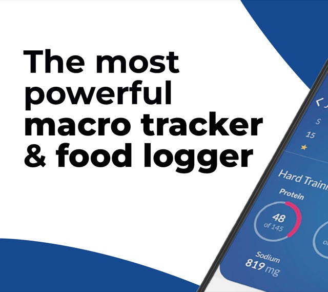

Your biggest search · 41%2 search terms“loss”
- In the ad
- Your search ad: the MacrosFirst listing and its first screenshots, shown to someone who typed “loss”, a weight-loss goal in one word.
- The promise
- A plan that gets me to a lower weight.
- Today it lands on
- The same welcome, account screen and “7 days for Free” paywall as every other search.